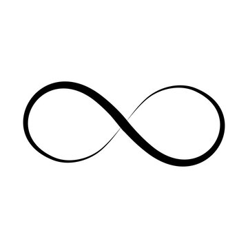
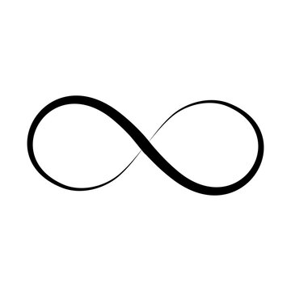

Table of contents |
|---|
| Abstract |
| Introduction |
| Analysis and Discussion |
| References |
The article explains the historical and mathematical development of the concept of infinity, from ancient philosophy to the modern
theory of sets. Early Greek ideas, such as Anaximander's apeiron and the Pythagoreans' unease with the infinite, are contrasted
with Zeno's paradoxes and Aristotle's distinction between potential and actual infinity. The study also discusses theological
interpretations of infinity with regard to divine nature, the Renaissance shifts to infinity in the universe, and Galileo's insights
into infinite sets. Calculus itself introduced practical infinite processes. It was not until Georg Cantor developed his revolutionary
set theory that infinities of different sizes could be identified. The paper concludes by highlighting the ongoing significance of
infinity in contemporary mathematics, physics, and philosophy, presenting it as a concept that continually expands human understanding
of the limitless.
Infinity represents one of the most intriguing, if not puzzling, conceptions humankind has ever developed. It has been said
to sit at the juncture between mathematics, philosophy, and theology, and that it often inspires a sense of wonder, occasionally
one of deep unease. From its earliest appearances in ancient civilizations to its rigorous formulation in modern set theory,
the history of infinity traces humanity's evolution in understanding the limitless. In mathematics, infinity represents unbounded
quantities, found in limits, infinite series, and the size of sets. It is not a number but a concept that describes endlessness.
There exist infinities of different sizes and there are countable and uncountable sets, which reshaped modern analysis and set theory.
The concept of infinity can be traced to ancient civilisations, particularly in Greek philosophy. Someone called Anaximander
proposed the idea of the apeiron, which means “the boundless”. Anaximander said that the apeiron was the origin of all things,
an eternal and unlimited substance from which the cosmos was created. This was one of humanity’s first attempts in recorded
history at trying to understand the concept of infinity.
Later, Pythagoreans saw the world as a harmonious structure where everything was controlled by numbers, but infinity troubled
them. They believed the cosmos was finite and ordered, and anything infinite seemed chaotic or irrational to them. The discovery
that the square root of two was irrational was a crisis for their view, as it suggested something endless and non-repeating
in mathematics.
But it was Zeno of Elea who made infinity a central philosophical problem. Zeno's paradoxes, such as Achilles and the
tortoise or the dichotomy paradox, highlighted some troubling issues about infinite divisibility. How can motion take place if
reaching any point requires crossing infinitely many smaller intervals? Zeno's puzzles forced later thinkers to consider
whether infinite processes could be completed and whether space and time were composed of indivisible numbers or infinitely
divisible numbers.
The philosopher Aristotle later distinguished between potential infinity and actual infinity. Potential infinity referred
to processes that could go on without end, such as adding 1 repeatedly to obtain larger and larger numbers. Actual infinity
was the completed existence of an infinite quantity. Aristotle rejected actual infinity as paradoxical and insisted that only
potential infinity was logically acceptable.
During the Middle Ages, a link between infinity and the divine nature of God was made by philosophers of Christian,
Islamic, and Jewish religion. People such as St. Augustine and Thomas Aquinas argued that God was infinite in power and
perfection. Although they agreed with Aristotle's view that actual infinity could not exist in the physicaluniverse, they
believed only God's being was truly infinite.
The Renaissance renewed mathematical and philosophical investigation. Giordano Bruno famously suggested that the universe
was infinite, containing an innumerable quantity of stars and worlds. Though highly controversial and eventually fatal to Bruno,
this idea did represent a major turning point: the infinite was no longer restricted to God but could be used to describe the
physical universe itself.
Galileo Galilei made fundamental contributions to mathematics. He remarked on a surprising property: the natural numbers can be
put into one-to-one correspondence with their squares, despite the fact that most numbers are not perfect squares. This meant a whole
infinite set could be no larger than one of its proper subsets - an impossible property for finite sets. Galileo concluded that the
ordinary notions of size or comparison did not apply to infinite magnitudes.
In 1655, John Wallis introduced the symbol for infinity. Independently of each other, Isaac Newton and Gottfried Wilhelm Leibniz
developed the basics of calculus during this time using infinite processes to study motion and change. The modern understanding of
infinity changed a lot in the late 19th century with the work of Georg Cantor. Cantor introduced the concept of set theory and
showed that there are different sizes of infinity. He showed, for example, that although the set of natural numbers is infinite,
the set of real numbers represents a larger infinity. This he called uncountable. This refuted the long-held belief that infinity
was single and indivisible.
Cantor also introduced the concept of transfinite numbers. These are numbers representing the different magnitudes of infinity and
developed the notation for the smallest infinite number of items in a set. His revolutionary ideas had much resistance from some,
including the mathematician Leopold Kronecker, who rejected actual infinity on philosophical grounds. However, eventually, Cantor's
work became foundational to modern mathematics.
Infinity also plays an important role in topology, measure theory, cosmology, and computer science. Today physics struggles with
infinities in theories about space and time.
History of Infinity is about the expansion of intellectual horizons. It was first forbidden, then divine, then paradoxical and finally
positive in its consequences for mathematics. But infinity remains a symbol of humanity trying to understand the boundless - even if our
grasp always extends just beyond reach. There are many different symbols related to infinity. These can be shown with their meanings,
significance and origins below.
| Symbols and Meanings | Origin |
|---|---|
| The Lemniscate ∞ meaning limitless, endless, boundless. | John Wallis in 1655 |
| Ouroboros, which is the symbol of a serpent eating its tail, means the infinite cycle of creation and destruction. | Ancient Egypt around the 14th century BCE. |
| The Mobius Strip is a one sided continuous surface representing infinity. | Discovered by mathematicians August Ferdinand Mobius and Johann Benedict in 1858. |
| Mathematical Ordinals (ω) are to represent different sizes or orders of infinity in set theory. | Introduced by the German mathematician Georg Cantor in the 1880s. |
Reference One
Reference Two
Reference Three
Reference Four
Reference Five